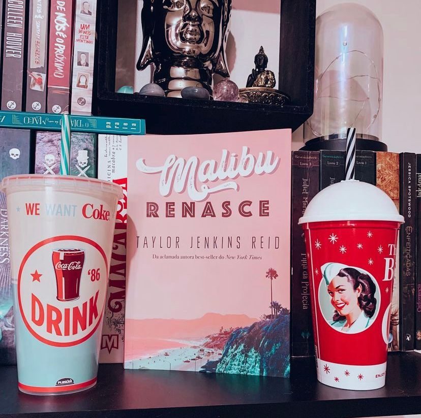

Malibu Renasce
(Taylor Jenkins Reid - Paralela)
⭐⭐⭐⭐
Os quatro filhos de Mick Riva são conhecidos e admirados por toda Malibu. Mas não só pelo pai famoso. A cada ano os quatro dão uma festa épica para comemorar o fim do verão ― e a de 1983 promete. Ela dura apenas algumas horas, mas é suficiente para mudar a vida deles para sempre.
Termino hoje falando sobre o terceiro livro que li da autora Taylor Jenkins Reid e posso dizer que como os outros dois: valeu a pena! A autora aqui começa a “unificar” seus livros pois percebemos que sua “tríade de sucessos” se passa no mesmo universo mas, até então Mick Riva era apenas coadjuvante. Ele foi o 3º marido de Evelyn Hugo e teve rápida aparição em Daisy Jones & The Six.
Diferente do que se pensa, Malibu Renasce não é uma história de amor romântico, paixões arrebatadoras e sim uma história de AMOR INCONDICIONAL entre família. O destaque da trama fica para a mãe desses quatros irmãos: June, uma mulher resiliente que passou por poucas e boas tendo sido a primeira esposa do grande astro da música e mãe de seus quatro filhos. E a outra mulher é Nina, irmã mais velha que se mostra uma mulher forte, e sempre cuida de tudo e todos. E na narrativa em muitos pontos nos perguntamos: Será que Nina, aceitaria passar pelas mesmas merdas que June passou?
Ao invés de entrevistas ou uma biografia a narrativa é feita terceira pessoa, alternando entre passado e presente. A autora segue com uma escrita impecável que te faz com que você se transporte para o universo do livro, o cheiro de maresia, o sol, o barulho do mar e também sinta no seu coração cada percalço da narrativa.